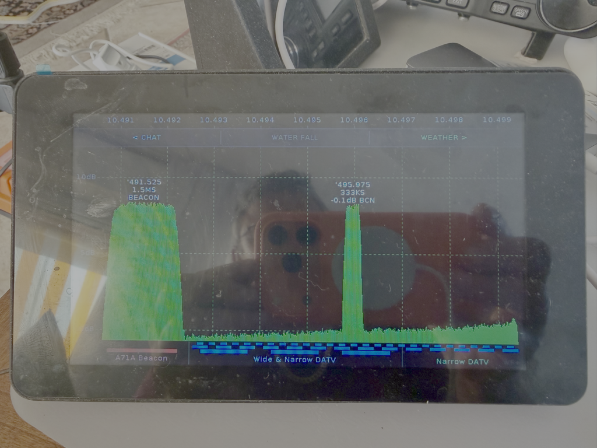

Flash the latest firmware directly from this page to your Waveshare ESP32-S3 integrated display — compatible with the 5-inch and 7-inch variants. Connect the board via USB, then click Install.
Requires Chrome or Edge (Web Serial API).
